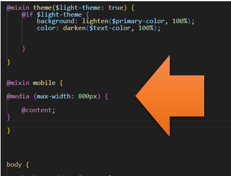
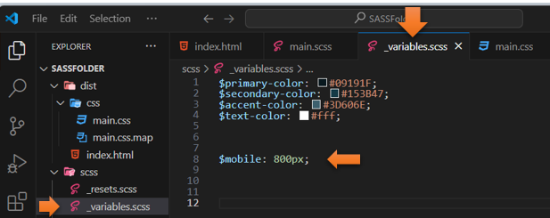
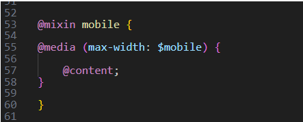
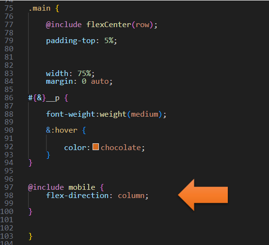
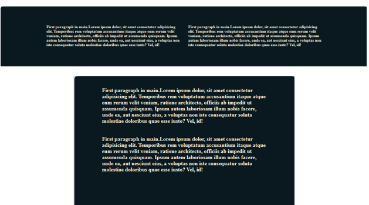

~9 Using a Mixin for Media Queries~
6/172024
Adding the New Variable to _variable file
Having your @mixin mobile to use your new variable
Adding the @include to the .main rule
Turn on SASS
Turn on your SASS Watcher
Writing Your main.SCSS file
In your main.SCSS file
Create a new @mixin after the @mixin for the theme.
@mixin mobile {
@media (max-width: 800px) {
@content;
}
}

Adding the New Variable to _variable file
But instead of defining that 800px directly in the argument list of the media query, we could also define a variable that would represent that number. That way we can change it around if we needed to when we include it and need to fill in the blanks (so to speak)
Create a new variable called @mobile
Remember that in SASS:
You could place this variable at the top of the page, but since we have a partial file named _variables.scss, we could just place this new instantiation of the variable in there.

Having your @mixin mobile to use your new variable
Now back in the main.SCSS file, you can switch out the 800px, with our new variable. Because now saying $mobile is the same thing as saying 800px, since we wrote this $mobile to represent it.
@mixin mobile {
@media (max-width: $mobile) {
@content;
}
}

In order for this to work, we need to set the direction for our main div back to (row).
.main {
@include flexCenter(row);
Adding the @include to the .main rule
In .main, right before the closing curly brace, we want to include this new @mobile mixin
@include mobile {
flex-direction: column;
}
@include mobile {
flex-direction: column;
}
The .main code now looks like this:

Testing the Code
Go back to index.html to test it and widen and narrow the page to test it. It should show the paragraphs in two rows if the page is wide, and a single column one on top of the other if the page is narrow.
And it works:
